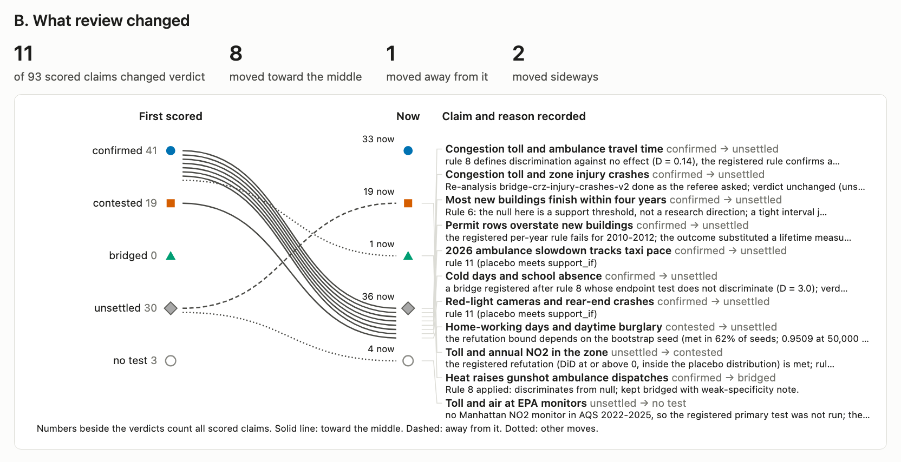

<section id="review">
<p class="eyebrow">What the referees changed</p>
<h2>Eleven verdicts changed after review: eight toward the middle</h2>

<aside>Every change is stored with the earlier verdict, the reason and the referee report, through concord.claims.revise. This is the history the Underlay is built to hold: assertions whose status changes, with the record of why.</aside>
</section>
